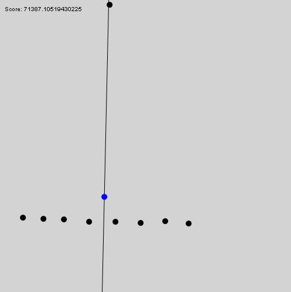

The Deming regression is a linear regression (or, "line of best fit"), that minimizes the total Euclidean squared distance of every point in a set from that line. The key difference is that the distance of every point to the line has both a x and y component, not just a vertical distance.
This regression is classically a minimization problem of two variables: slope, and y-intersect. Here, I use the Hessian normal form of the line, which naturally extends to planes. It is essentially a polar way of describing lines: in terms of angle from the origin, and distance.
I'm using a simple optimization algorithm based on the numerical partial derivatives of the two variables with respect to the score. A property of the orthogonal least-squares linear regression method is that there are no local minimums. This is probably related to the fact that there is a closed form solution for the line.
Of note, is that the line does indeed pass through the simple average of the points. As well, the behavior of the line as it finds the minimum score can be compared to physical spring systems.
The Deming regression, or orthogonal regression, weighs outliers heavily. Although it has deep statistical advantages, the following case definitely seems like an error in the context of fitting arbitrary points. A human would definitely not say the line of best fit is this:
You can build such a case with the above tool yourself. It will disregard very obvious linear relationships if there is an outlier of moderate distance. Indeed, it will always disregard some finite relationship of points - no matter how strong - if there is an arbitrarily far away outlier. This is also the case with the ' least absolute error regression' method, which simply adds up the distance of every point from the line. (And has local minima).
One hypothetical cost function which would not have this property is perhaps one that maximizes the sum of 1/(dist)^2 of every point. This resembles cetain other equations from physics.
Building a list of local minima may allow one to find multiple, distinct, linear relationships in the same set of points with efficient complexity. This is leaving the domain of linear regression, and entering into topics such as data mining and pattern recognition.